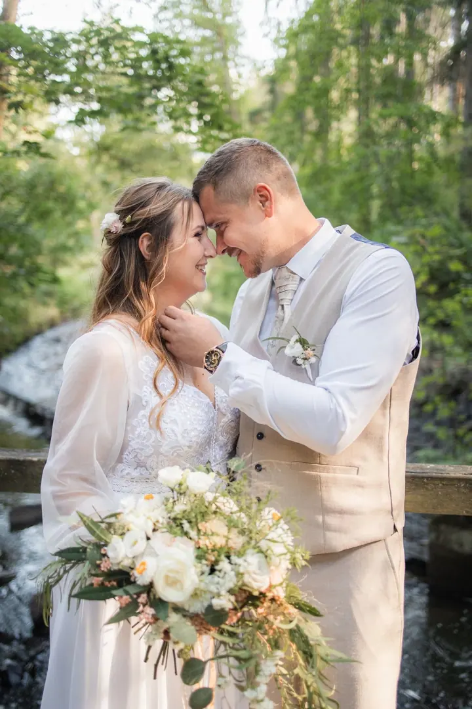
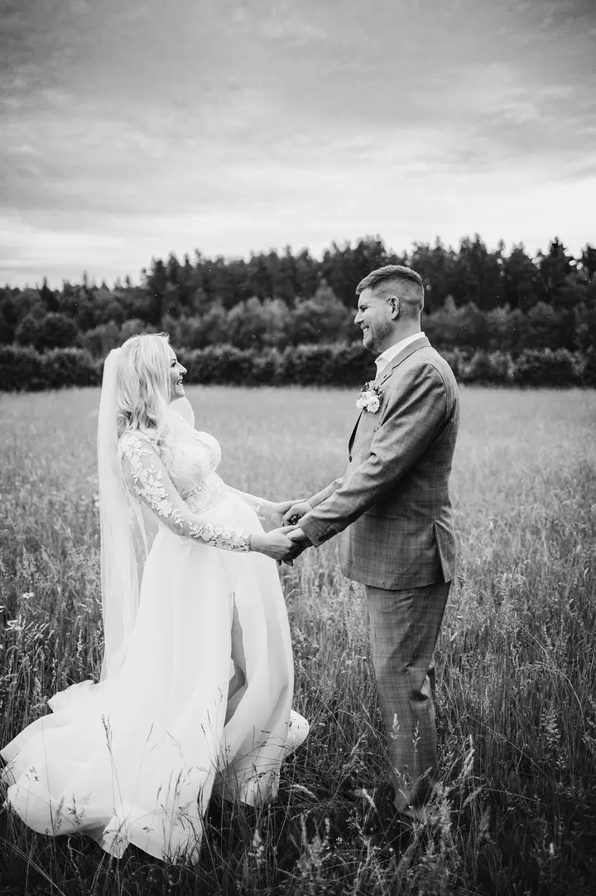
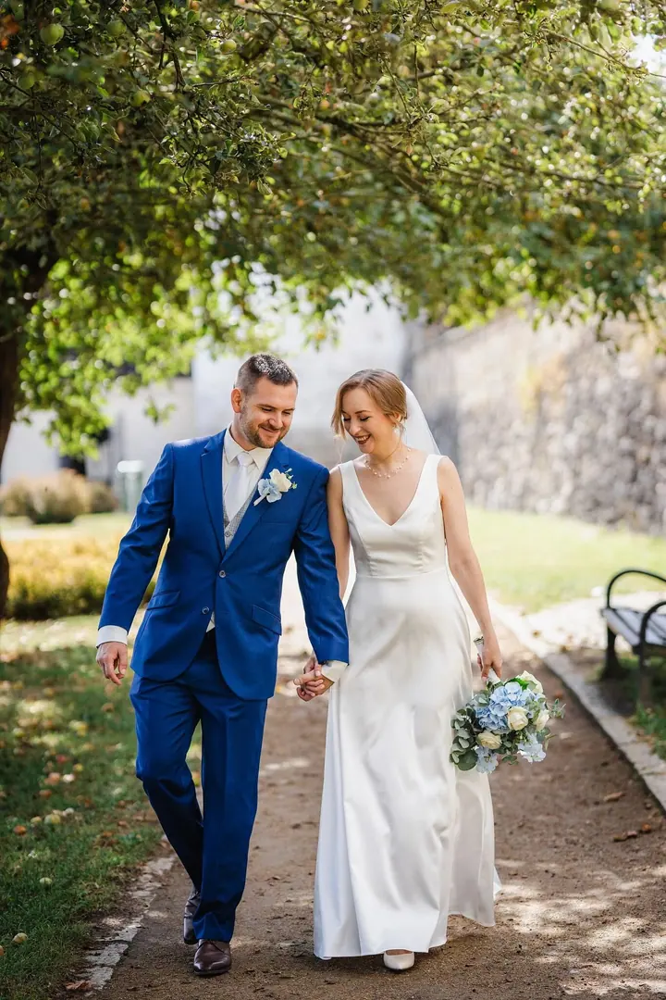
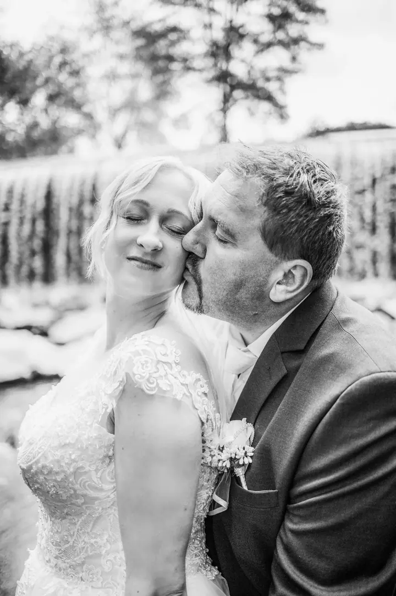

jedna
Svatební focení
Fotím hlavně reportážně a zachycuji celý váš den: přípravy, obřad, gratulace, portréty i večerní zábavu. Balíčky začínají na dvouhodinovém focení a končí celým dnem od příprav až po večerní zábavu.

Svatební, rodinná a portrétní fotografka · Tábor, Planá nad Lužnicí, jižní Čechy

Jmenuji se Lucie Surá a jsem svatební fotografka z Tábora. Nefotím dokonalé pózy, ale příběhy. Fotím svatby, rodiny, páry i těhotenské focení v Táboře, Plané nad Lužnicí a po celých jižních Čechách.
Více o mně
Co fotím
jedna
Fotím hlavně reportážně a zachycuji celý váš den: přípravy, obřad, gratulace, portréty i večerní zábavu. Balíčky začínají na dvouhodinovém focení a končí celým dnem od příprav až po večerní zábavu.
Nejde o pózy ani dokonalost, ale o vztahy, doteky a chvíle, které se dějí samy od sebe. Fotím doma u vás, venku v přírodě nebo v ateliéru v Táboře.
Každý pár je jiný, a tak nechci, aby vaše fotky vypadaly podle jedné šablony. Můžeme se smát a toulat venku, nebo si užít klidnější focení v ateliéru.
Těhotenství i první dny s miminkem fotím v klidu, vlastním tempem a s respektem k dětem i rodičům. Výsledkem jsou přirozené fotografie, ke kterým se budete rádi vracet.
Život se mění. Fotografie zůstávají.

Za objektivem
Jsem fotografka lidí a světa kolem nich. Světla si všímám všude: jak dopadá na člověka, prochází oknem nebo na pár vteřin úplně změní obyčejné místo. Někdy na něj čekám, jindy si ho sama vytvářím. Stejně tak mě baví chvíle, které nejdou naplánovat a často trvají jen pár vteřin.
Na svatbách pracuji převážně reportážně. Většinu dne jsem nenápadně v pozadí, pozoruji dění kolem sebe a zachycuji emoce tak, jak přirozeně vznikají. Při párovém focení vás ale nenechám tápat. Jemně vás navedu, poradím s pohybem i pózou a potom vám nechám prostor být spolu.
Záleží mi na tom, abyste se cítili uvolněně a nemuseli přemýšlet, jak se tvářit nebo kam dát ruce. Focení má být přirozenou součástí vašeho dne, ne stres navíc. Chci, abyste se na fotografiích poznali, a to nejen dnes, ale i za mnoho let.
Lucie
Napište mi, co plánujete, a já vám ověřím volný termín. Společně vymyslíme, co bude dávat smysl právě vám.
Termín potvrdíte zálohou 5 000 Kč. U větších balíčků se před svatbou potkáme a projdeme, na čem vám záleží.
Fotím převážně reportážně a nenápadně. Při portrétech vás jemně navedu, aby vznikly přirozené fotky bez zbytečného aranžování.
Upravené fotky barevně i černobíle dostanete v online galerii do 4 týdnů. Podle balíčku k nim přidám tištěné fotky, fotoknihu nebo plátno.
Portfolio
Otázky
Krátké dvouhodinové focení obřadu a portrétů stojí 7 000 Kč, celý den (12 hodin) 24 900 Kč. Mezi nimi jsou balíčky na 6 a 8 hodin, každá další hodina stojí 2 500 Kč.
Svatební fotografie odevzdávám v elektronické podobě do 4 týdnů, ostatní focení do 2 týdnů od zaslání výběru.
Vůbec ne. Když je potřeba, povedu vás a poradím s pohybem i pózou. Jindy ustoupím a nechám věci jednoduše plynout.
Fotím hlavně v Táboře a po celém Jihočeském kraji, za vaším příběhem ale ráda přijedu i dál. Mimo Tábor a blízké okolí účtuji cestovné 10 Kč za kilometr.
Ne, neupravené fotografie ani RAW soubory neposkytuji. Dostanete pečlivě upravené snímky barevně i černobíle.